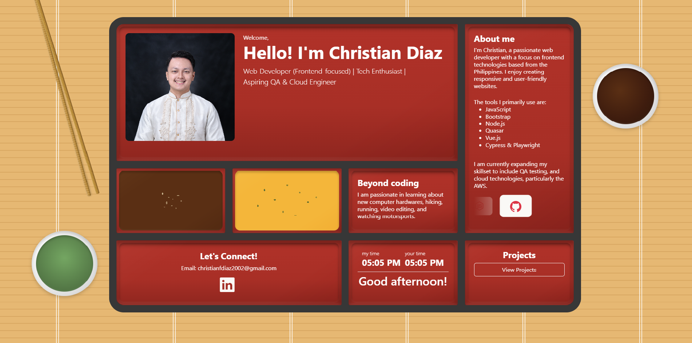

Welcome,
Web Developer (Frontend-focused) | Tech Enthusiast |
Aspiring QA & Cloud Engineer
I'm Christian, a passionate web developer with a focus on frontend technologies based from the Philippines. I enjoy creating responsive and user-friendly websites.
The tools I primarily use are:
I am currently expanding my skillset to include QA testing, and cloud technologies, particularly the AWS.
I am passionate in learning about new computer hardwares, hiking, running, video editing, and watching motorsports.
my time
your time
Featured Project Inactive
A collaborative web-based information system designed to manage and visualize columbarium mapping data with responsive frontend implementation.
Personal Project
A modern portfolio inspired by Japanese bento aesthetics, featuring responsive layouts, and custom CSS textures.
